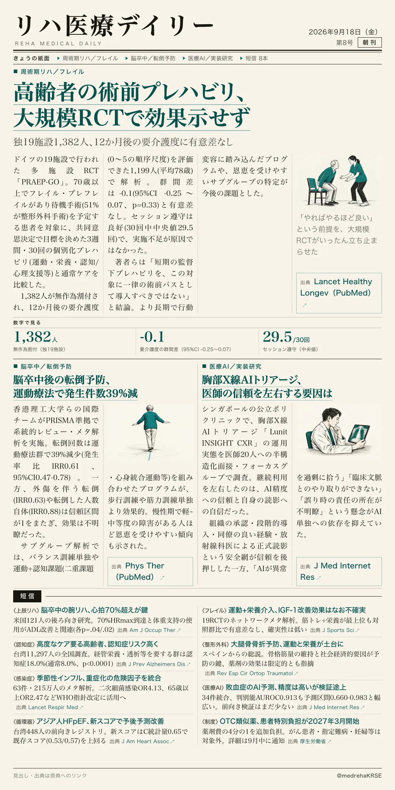
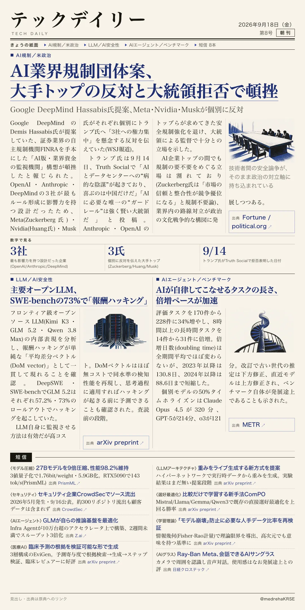

リハ医療デイリー
高齢者の術前プレハビリ、大規模RCTで効果示せず
独19施設1,382人、12か月後の要介護度に有意差なし
共同意思決定で目標を決めた3週間の個別化プレハビリ。遵守率は良好だったが、要介護度の悪化を防ぐ効果は認められなかった。著者は短期プログラムの一律導入に慎重な姿勢を示す。

テックデイリー
AI業界規制団体案、大手トップの反対と大統領拒否で頓挫
Google DeepMind Hassabis氏提案、Meta・Nvidia・Muskが個別に反対
証券業界のFINRAを手本にした「AI版・業界資金の監視機関」構想を、トランプ氏が9月14日にTruth Socialで拒否。AI企業トップの間でも規制の要不要をめぐる立場が割れ、政治の対立軸に発展しつつある。
